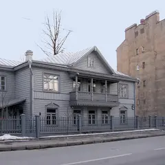
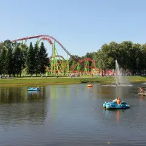
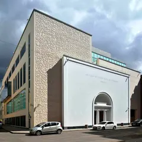
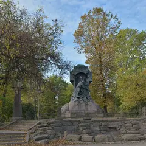
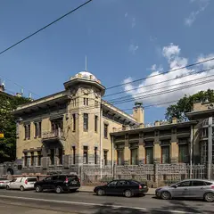

Районы · Петроградская сторона
Куда сходить на Петроградской стороне
64 места на Петроградской стороне (Петроградский район): 17 ресторанов и кафе, 12 кофеен, 12 мест для прогулки и 6 баров. Например, «Ботанический сад Петра Великого», «Дом с башнями» и «Елагин остров». 27 готовых планов начинаются здесь. Больше всего мест у станций «Горьковская», «Петроградская» и «Чкаловская».
- 64 места
- 27 планов
- 1 клуб
Места 40 из 63
ул. Профессора Попова, 2П
Новое
Старейший ботанический сад страны: дендрарий, японский сад и оранжереи с тропиками; осенью сюда приходят любоваться клёнами.
Подробнее и маршрут: Ботанический сад Петра ВеликогоПозвать сюда: Ботанический сад Петра Великого
Фото: Afanasovich, CC BY 4.0 · Wikimedia Commons
Каменноостровский пр., 35 (площадь Льва Толстого)
Новое
Две шестигранные башни Белогруда в духе английского замка держат всю площадь; на одной — циферблат со знаками зодиака. Силуэт эффектен в сумерках.
Подробнее и маршрут: Дом с башнямиПозвать сюда: Дом с башнями
Фото: Grigorius m, CC BY-SA 4.0 · Wikimedia Commons
Елагин остров, 4Т
Новое
Остров-парк без машин: пруды, белки, дворец и Стрелка, где провожают солнце над заливом. Осенью — одно из лучших мест города.
Подробнее и маршрут: Елагин островПозвать сюда: Елагин остров
Фото: Александровы АГ, CC BY-SA 4.0 · Wikimedia Commons
Футбольная аллея, 1
Новое
Домашний стадион «Зенита» на Крестовском: матчи с атмосферой трибун, после игры — прогулка у залива.
Подробнее и маршрут: Газпром АренаПозвать сюда: Газпром Арена
Фото: Ivan Smelov, CC BY-SA 4.0 · Wikimedia Commons
Каменноостровский пр., 1–3
Новое
Курдонёр с совой на центральном фронтоне, зайцами, рысью и ящерицей в рельефах и балконными решётками-паутинами с пауками. Детали лучше видны в утреннем свете.
Подробнее и маршрут: Дом ЛидваляПозвать сюда: Дом Лидваля
Фото: Wolfgang Moroder, CC BY-SA 3.0 · Wikimedia Commons
Большая аллея, 10 (дача Свягина)
Новое
Тихие аллеи вдоль протоков, деревянные и каменные дачи модерна и готическая церковь Иоанна Предтечи у моста. Особенно хорош осенью и тёплым вечером.
Подробнее и маршрут: Каменный островПозвать сюда: Каменный остров
Фото: Alexey Komarov, CC BY 3.0 · Wikimedia Commons
Барочная ул., 4А
Новое
Кафе у бывшего Левашовского хлебозавода: своя пекарня и лавка, завтраки до обеда, свежий хлеб и живая городская атмосфера.
Подробнее и маршрут: Кафе на ХлебозаводеПозвать сюда: Кафе на Хлебозаводе
Фото: Никонико962, CC BY-SA 4.0 · Wikimedia Commons
Александровский парк, 1
Новое
Один из старейших зоопарков страны на Петроградке: тигры, приматы, хищники и птицы, работает круглый год.
Подробнее и маршрут: Ленинградский зоопаркПозвать сюда: Ленинградский зоопарк
Фото: Александровы АГ, CC BY-SA 4.0 · Wikimedia Commons

ул. Профессора Попова, 10
Новое
Деревянный дом среди каменной Петроградки, где в 1912 году Матюшин устроил штаб авангарда; мемориальные комнаты с работами его круга и Елены Гуро.
Подробнее и маршрут: Музей петербургского авангарда (Дом Матюшина)Позвать сюда: Музей петербургского авангарда (Дом Матюшина)
Фото: MaryannaNesina, CC BY 3.0 · Wikimedia Commons
территория Петропавловская крепость, 3Т
Новое
Сердце города на Заячьем острове: шпиль собора, полуденный выстрел пушки и песчаная полоса у стен с видом на Дворцовую.
Подробнее и маршрут: Петропавловская крепостьПозвать сюда: Петропавловская крепость
Фото: Vadim Fedin, CC BY 3.0 · Wikimedia Commons

Крестовский пр., 23
Новое
Большой парк на Крестовском с прудами и аллеями, ведущими к заливу; рядом стадион и Яхтенный мост с видом на Лахту.
Подробнее и маршрут: Приморский парк ПобедыПозвать сюда: Приморский парк Победы
Фото: Bestalex, CC BY-SA 4.0 · Wikimedia Commons
Александровский парк, 4
Новое
Классический планетарий у Горьковской: программы под куполом, обсерватория и интерактивные залы.
Подробнее и маршрут: Санкт-Петербургский планетарийПозвать сюда: Санкт-Петербургский планетарий
Фото: NGC 7070, CC BY-SA 3.0 · Wikimedia Commons

Большая Пушкарская ул., 14Б
Новое
Новая сцена на Петроградке для балетов Эйфмана и выступлений его академии.
Подробнее и маршрут: Театр Академии танца Бориса ЭйфманаПозвать сюда: Театр Академии танца Бориса Эйфмана
Фото: Viktorinkalexeeva, CC BY-SA 4.0 · Wikimedia Commons
Каменноостровский пр., 26-28
Новое
Вторая бильярдная сети на Каменноостровском: столы для пула, крафт и кухня — хорошее продолжение прогулки.
Подробнее и маршрут: Kiks на ПетроградкеПозвать сюда: Kiks на Петроградке
Фото здания: Bestalex, CC BY-SA 4.0 · Wikimedia Commons

Кронверкский пр., Александровский парк
Новое
Тенистый парк вокруг кронверка у «Горьковской»: рукой подать до крепости, мечети и Троицкого моста.
Подробнее и маршрут: Александровский паркПозвать сюда: Александровский парк
Фото: Wolfgang Moroder, CC BY-SA 3.0 · Wikimedia Commons
Приморский пр., 91
Новое
Храм из колотого гранита по тибетскому канону: позолота, яркая роспись, витражи по эскизам Рериха и пятиметровый Будда в зале под световым фонарём.
Подробнее и маршрут: Дацан ГунзэчойнэйПозвать сюда: Дацан Гунзэчойнэй
Фото: Vadim Tolbatov, CC BY-SA 4.0 · Wikimedia Commons

ул. Куйбышева, 2-4
Новое
Особняк Кшесинской в стиле модерн: интерьеры балерины и выставки о XX веке.
Подробнее и маршрут: Музей политической истории РоссииПозвать сюда: Музей политической истории России
Фото: Florstein, CC BY-SA 4.0 · Wikimedia Commons
наб. реки Карповки
Новое
Неширокая речка Петроградки с зелёными берегами, домами модерна и арт-кварталом в бывшем заводе — тихий маршрут без толп.
Подробнее и маршрут: Набережная реки КарповкиПозвать сюда: Набережная реки Карповки
Фото: Николай Булыкин, CC BY-SA 4.0 · Wikimedia Commons
Большая Зеленина ул., 6
Новое
Новый японский ресторан с грилем, азиатскими коктейлями и кальяном; размеренный ужин вдвоём или с подругами.
Каменноостровский пр., 12
Новое
Бельгийская пивная у «Горьковской»: траппистские сорта, мидии и картофель фри; в пятницу и субботу до трёх ночи.
Подробнее и маршрут: Manneken Pis на КаменноостровскомПозвать сюда: Manneken Pis на Каменноостровском
Большой пр. П.С., 84
КруглосуточноНовое
Лаунж-бар и клуб на Петроградке, открытый круглосуточно: коктейли, тематические вечеринки и диджеи по выходным.
Зоологический пер., 2-4
Новое
Итальянская классика у Зоопарка от Арама Мнацаканова: пицца, паста, вино; любимец гастрономов.
Каменноостровский пр., 42
Новое
Зимний сад с пальмами и старым мраморным фонтаном во дворе ДК, вход свободный. Тёплое зелёное место для неспешной прогулки вдвоём в холодный день.
Подробнее и маршрут: Secret GardenПозвать сюда: Secret Garden
Гатчинская ул., 16
Новое
Бильярдный бар на Петроградке: пул, фиш-энд-чипс от шефа и внутренний двор, каждый день до двух ночи.
ул. Блохина, 6/3
Новое
Камерный коктейльный бар, совмещённый с магазином винила: выбираешь пластинку и слушаешь её с бокалом в руке.
Большая Пушкарская ул., 6
Новое
Пивной бар в начале Большой Пушкарской, где болеют за «Зенит» и устраивают акции после побед; разливное и простые закуски.
Подробнее и маршрут: Баловни судьбыПозвать сюда: Баловни судьбы
Провиантская ул., 3
Новое
Баскская кухня на Петроградке: стейк с перечным соусом, паэлья и винтажная мебель; финалист премии 2026.
Подробнее и маршрут: Баски & МонегаскиПозвать сюда: Баски & Монегаски
Каменноостровский пр., 10
Новое
Новый авторский ресторан на Петроградке, сразу попавший в финал городской премии 2026.
Кронверкский пр., 45
Новое
Небольшая спешелти-кофейня у Горьковской со своими десертами; регулярно приглашает на гостевые смены бариста из других кофеен.
Каменноостровский пр., 10
Новое
Кинозал на легендарной киностудии: фестивальные показы, ретроспективы и встречи с режиссёрами.
Подробнее и маршрут: Кинотеатр «Ленфильм»Позвать сюда: Кинотеатр «Ленфильм»
Южная дорога, 11
Новое
Рыбный ресторан у воды на Крестовском: рыбу можно выловить самим в садке — её приготовят на кухне.
Подробнее и маршрут: Русская рыбалкаПозвать сюда: Русская рыбалка
Газовая ул., 10, лит.З
Новое
Большой скалодром у Чкаловской: трассы и боулдеринг для новичков и опытных, открыт каждый день с утра до ночи.
Подробнее и маршрут: Северная СтенаПозвать сюда: Северная Стена
Сытнинская ул., 5
Новое
Старейший рынок города с фуд-аллеей: котлетная, деликатесы, хамон и лавки — полдня на Петроградке.
Каменноостровский пр., 18/11Б
Новое
Кофейня во дворе у Каменноостровского с тысячами пятёрок: знаменитый вишнёвый пирог и тихая посадка вдали от проспекта.
Южная дорога, 28
Новое
Пространство у залива на Крестовском: спорт, баня и ресторан с видом, а зимой — каток на берегу.
пр. Добролюбова, 5/1
Новое
Яркая кофейня в эстетике 60–70-х, названная в честь альбома Pink Floyd: сырники по утрам, недорогое меню и уютная посадка.
Подробнее и маршрут: Atom Heart CoffeeПозвать сюда: Atom Heart Coffee
Инструментальная ул., 3
Новое
Шампань-бар, с которого началась гастроулица на Инструментальной: игристое, фэнси-закуски и вечера под даунтемпо.
Подробнее и маршрут: Big Wine FreaksПозвать сюда: Big Wine Freaks
наб. Адмирала Лазарева, 22
Новое
Французское бистро у Малой Невки: тартар с фри, луковый суп, беф бургиньон и ягодные тарты.
Подробнее и маршрут: Frantsuza BistrotПозвать сюда: Frantsuza Bistrot
ул. Академика Павлова, 5В
Новое
Новый средиземноморский рыбный от Duo Band с видом на Большую Невку: ледяная витрина, устрицы, дровяная печь.
Подробнее и маршрут: Lavraki bistroПозвать сюда: Lavraki bistro
Барочная ул., 6, стр. 1
Новое
Книги об искусстве, архитектуре, моде и фото в ванильно-жёлтом и сером зале с кофейней и выставочной зоной; есть редкие издания. Утром в будни пусто.
Подробнее и маршрут: Masters BookstoreПозвать сюда: Masters Bookstore


Готовые планы 18 из 27
- Театр Академии танца Бориса Эйфмана · Театр балета · м. Чкаловская
- 7 минут пешкомDOJO · Ресторан
Спектакль в театре Академии Эйфмана, затем пять минут пешком до DOJO — гриль и азиатские коктейли.
Открыть план: Балет и японский ужинПозвать сюда: Балет и японский ужин
Фото: Viktorinkalexeeva, CC BY-SA 4.0 · Wikimedia Commons
- Дом с башнями · Доходный дом-«замок» · м. Петроградская
- 4 минуты пешкомSecret Garden · Оранжерея
- 4 минуты пешкомNerede · Кофейня
Дом с башнями на площади Льва Толстого, рядом зимний сад с фонтаном, затем кофе в Nerede — всё в паре минут ходьбы.
Открыть план: Замок, пальмы и кофеПозвать сюда: Замок, пальмы и кофе
Фото: Grigorius m, CC BY-SA 4.0 · Wikimedia Commons
- Masters Bookstore · Книжный об искусстве и дизайне · м. Чкаловская
- 23 минуты пешкомКаменный остров · Остров дач и особняков
Альбомы и кофе в Masters на Барочной, потом тихие аллеи и деревянные дачи Каменного острова.
Открыть план: Книжный об искусстве и Каменный островПозвать сюда: Книжный об искусстве и Каменный остров
Фото: Alexey Komarov, CC BY 3.0 · Wikimedia Commons
- Дом Лидваля · Доходный дом, северный модерн · м. Горьковская
- 19 минут пешкомДом с башнями · Доходный дом-«замок»
- 10 минут пешкомМузей петербургского авангарда (Дом Матюшина) · Дом-музей
Совы и пауки дома Лидваля, замок с башнями на площади Толстого и деревянный дом Матюшина среди камня.
Открыть план: Модерн ПетроградкиПозвать сюда: Модерн Петроградки
Фото: Wolfgang Moroder, CC BY-SA 3.0 · Wikimedia Commons
- Ботанический сад Петра Великого · Сад · м. Петроградская
- 15 минут пешкомLavraki bistro · Рыбный ресторан
Японский сад и оранжереи с тропиками старейшего ботсада страны, а потом 15 минут пешком — средиземноморский рыбный ресторан с видом на Большую Невку.
Открыть план: Ботанический сад и рыба у НевкиПозвать сюда: Ботанический сад и рыба у Невки
Фото: Afanasovich, CC BY 4.0 · Wikimedia Commons
- Ботанический сад Петра Великого · Сад · м. Петроградская
- 7 минут пешкомBig Wine Freaks · Винный бар
Японский сад и оранжереи с тропиками, а потом 7 минут пешком — шампань-бар, с которого началась гастроулица на Инструментальной.
Открыть план: Ботанический сад и шампань-барПозвать сюда: Ботанический сад и шампань-бар
Фото: Afanasovich, CC BY 4.0 · Wikimedia Commons
- Кафе на Хлебозаводе · Кафе-пекарня · м. Чкаловская
- 8 минут пешкомFrantsuza Bistrot · Французское бистро
Свежий хлеб и завтраки до обеда у бывшего Левашовского хлебозавода, а к обеду — 8 минут пешком до бистро с луковым супом и ягодными тартами.
Открыть план: Завтрак на Хлебозаводе и французское бистроПозвать сюда: Завтрак на Хлебозаводе и французское бистро
Фото: Никонико962, CC BY-SA 4.0 · Wikimedia Commons
- Санкт-Петербургский планетарий · Планетарий · м. Горьковская
- 8 минут пешкомЗайцы · Ресторан
Программа под куполом классического планетария, а потом 8 минут пешком — новый авторский ресторан на Петроградке, сразу попавший в финал городской премии.
Открыть план: Звёзды у Горьковской и ужин в «Зайцах»Позвать сюда: Звёзды у Горьковской и ужин в «Зайцах»
Фото: NGC 7070, CC BY-SA 3.0 · Wikimedia Commons
- Ленинградский зоопарк · Зоопарк · м. Горьковская
- 7 минут пешкомAtom Heart Coffee · Кофейня
Тигры, приматы и птицы в одном из старейших зоопарков страны, а потом 7 минут пешком — яркая кофейня в эстетике 60–70-х.
Открыть план: Зоопарк и кофейня в духе 70-хПозвать сюда: Зоопарк и кофейня в духе 70-х
Фото: Александровы АГ, CC BY-SA 4.0 · Wikimedia Commons
- Газпром Арена · Стадион · м. Зенит
- 18 минут пешкомПапаша Клаусс · Ресторан-пивоварня
Трибуны на Крестовском и атмосфера домашнего матча, а после игры 18 минут пешком до пивоварни у залива — разобрать голы под свежее пиво.
Открыть план: Матч «Зенита» и пивоварня у заливаПозвать сюда: Матч «Зенита» и пивоварня у залива
Фото: Ivan Smelov, CC BY-SA 4.0 · Wikimedia Commons
- Петропавловская крепость · Крепость · м. Горьковская
- 18 минут пешкомManneken Pis на Каменноостровском · Паб
Петропавловка к полудню — пушка бьёт с бастиона, вокруг вид на Дворцовую, — а потом прогулка к Горьковской, 18 минут пешком, в бельгийскую пивную.
Открыть план: Полуденный выстрел и бельгийское пивоПозвать сюда: Полуденный выстрел и бельгийское пиво
Фото: Vadim Fedin, CC BY 3.0 · Wikimedia Commons
- Приморский парк Победы · Парк · м. Крестовский остров
- 12 минут пешкомРусская рыбалка · Рыбный ресторан
Аллеи Крестовского до самого залива, а потом 12 минут пешком — ресторан у воды, где рыбу можно выловить самим, а её приготовят на кухне.
Открыть план: Приморский парк и рыба из садкаПозвать сюда: Приморский парк и рыба из садка
Фото: Bestalex, CC BY-SA 4.0 · Wikimedia Commons
- Kiks на Петроградке · Бильярдная · м. Петроградская
- 7 минут пешкомManneken Pis на Каменноостровском · Паб
Столы для пула и крафт на Каменноостровском, а потом 7 минут пешком — бельгийская пивная с траппистами и мидиями.
Открыть план: Пул на Петроградке и бельгийское пивоПозвать сюда: Пул на Петроградке и бельгийское пиво
Фото здания: Bestalex, CC BY-SA 4.0 · Wikimedia Commons
- Solids · Бильярдный бар · м. Чкаловская
- 6 минут пешкомDOJO · Ресторан
Пару партий в бильярд на Петроградке, а потом через пять минут — неспешный японский ужин с коктейлями.
- Елагин остров · Парк · м. Крестовский остров
Остров-парк без машин: пруды, белки и Стрелка, где все вместе провожают солнце над заливом.
Открыть план: Елагин остров и закатПозвать сюда: Елагин остров и закат
Фото: Александровы АГ, CC BY-SA 4.0 · Wikimedia Commons
- Елагин остров · Парк · м. Крестовский остров
Остров-парк без машин: пруды, белки, дворец — и западная Стрелка, где провожают солнце над заливом. Осенью тут особенно красиво.
Открыть план: Елагин остров и закат на СтрелкеПозвать сюда: Елагин остров и закат на Стрелке
Фото: Александровы АГ, CC BY-SA 4.0 · Wikimedia Commons
- Secret Garden · Оранжерея · м. Петроградская
- 5 минут пешкомMonterey · Коктейльный бар
Погулять среди пальм в тёплой оранжерее, а потом через четыре минуты пешком — коктейли в Monterey.
Открыть план: Зимний сад и коктейлиПозвать сюда: Зимний сад и коктейли
- Баски & Монегаски · Ресторан · м. Спортивная
- 1 минута пешком33⅓ · Коктейльный бар
Стейк с перечным соусом и паэлья среди винтажной мебели, а потом — коктейльный бар, где выбираешь пластинку и слушаешь её с бокалом.
Открыть план: Баскский ужин и бар с виниломПозвать сюда: Баскский ужин и бар с винилом
Компьютерные клубы 1
Большой пр. П.С., 79
КруглосуточноНовое
Премиум-формат сети прямо у Петроградской: топовое железо и режим 24/7 — легко зайти после прогулки по Большому проспекту.
Подробнее и маршрут: Colizeum Premium · ПетроградкаПозвать сюда: Colizeum Premium · Петроградка
Как позвать
- Выбери план, место или событие — в карточке адрес, цены и маршрут в Яндекс Картах.
- Нажми «Позвать сюда» — соберётся приглашение-игра для свидания или голосование для компании.
- Отправь ссылку в любой мессенджер: тебе ответят, а компания отметит, куда и когда может. Бесплатно и без регистрации.